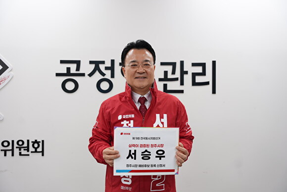

사진첩 현장에서 만나는 서승우

청주시장 예비후보
빛나는 청주시민, 다시 뛰는 더 큰 청주
성과로 증명하는 행정가, 서승우
"청주에서 나고 자라며 이 도시의 가능성을 누구보다 잘 압니다.
중앙과 지방정부 핵심 요직에서 쌓은 실전 경험으로
인구 88만 청주를 다시 뛰게 하겠습니다.
성과로 증명하는 행정가, 서승우입니다."

국민의힘 청주시장 예비후보
1993년
인구 88만 청주의 위상에 맞는 특례시 지정을 추진합니다
청주·세종·증평을 연결한 100만 생활 광역시를 만들겠습니다
인공지능 기반의 미래형 스마트 도시를 구현합니다
청주공항·오송역·GTX를 연결하는 교통 허브를 만듭니다
미호강·무심천 중심의 수변 감성 도시를 조성합니다

청주시장 출마 선언 보도

출마 기자회견 전문

핵심 공약 발표

CBMTV 보도